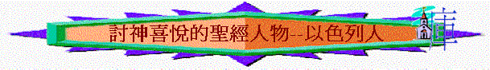

一.以色列人的歷史
1.祖先
「耶和華對亞伯蘭說：「你要離開本地、本族、父家，往我所要指示你的地去。我必叫你成為大國。我必賜福給你，叫你的名為大；你也要叫別人得福。為你祝福的，我必賜福與他；那咒詛你的，我必咒詛他。地上的萬族都要因你得福。」」創12:1-3
「從此以後，你的名不再叫亞伯蘭，要叫亞伯拉罕，因為我已立你作多國的父。我必使你的後裔極其繁多；國度從你而立，君王從你而出。我要與你並你世世代代的後裔堅立我的約，作永遠的約，是要作你和你後裔的神。」創17:5-7
∼神要從亞伯拉罕的後裔建立一個屬神的國度──即日後的以色列國，萬國要因亞伯拉罕的後裔得福
2.名字
「那人說：「你名叫什麼？」他說：「我名叫雅各。」那人說：「你的名不要再叫雅各，要叫以色列；因為你與神與人較力，都得了勝。」」創32:27-28
∼以色列的名字源於雅各，雅各遇到天使(也代表神)，天使與他較力後，給了他一個新名字──「以色列」，以色列的意思是上帝戰鬥或上帝統治意思，對日後以色列有兩個意思
A.先祖與上帝較力經歷──得勝而得福的原因人發現自己的軟弱而哭泣懇求神
B.受上帝管治而得福份──先祖人生用自己的方法抓住世界的事，但其實最重要是與上帝一起，與上帝建立關係，就得著權柄與福份。
3.國度
「『我向埃及人所行的事，你們都看見了，且看見我如鷹將你們背在翅膀上，帶來歸我。如今你們若實在聽從我的話，遵守我的約，就要在萬民中作屬我的子民，因為全地都是我的。你們要歸我作祭司的國度，為聖潔的國民。』這些話你要告訴以色列人。」」出19:4-6
〜出埃及記記載神救贖選民離開埃及，而其救贖的原因是神要領祂的子民從埃及拜偶像之地出來，建立一個屬神的國度，要作以色列人的神，以色列人要歸於神，也讓別國得知神的偉大與榮耀，萬民也因選民得福。
二.令神喜悅的以色列
1.神喜悅她
「耶和華專愛你們，揀選你們，並非因你們的人數多於別民，原來你們的人數在萬民中是最少的。只因耶和華愛你們，又因要守他向你們列祖所起的誓，就用大能的手領你們出來，從為奴之家救贖你們脫離埃及王法老的手。所以，你要知道耶和華─你的 神，他是 神，是信實的 神；向愛他、守他誡命的人守約，施慈愛，直到千代；」申7:7-9
「看哪，天和天上的天，地和地上所有的，都屬耶和華─你的 神。耶和華但喜悅你的列祖，愛他們，從萬民中揀選他們的後裔，就是你們，像今日一樣。」申10:14-15
A.不是因他們比其他人優越──原來他們的人數在萬民中是最少的。
B.乃是神專愛他們
∼專愛有戀慕意思，而原文與申10:15的喜悅字同一個字
∼神喜悅以色列因為戀慕她
C.因神愛列祖
D.因神守對列祖的約
2.神揀選她
「耶和華專愛你們，揀選你們，並非因你們的人數多於別民，原來你們的人數在萬民中是最少的。」申7:7
「耶和華但喜悅你的列祖，愛他們，從萬民中揀選他們的後裔，就是你們，像今日一樣。」申 10:15
因為你歸耶和華─你 神為聖潔的民，耶和華從地上的萬民中揀選你特作自己的子民。申 14:2
「耶和華說：「我曾愛你們。」你們卻說：「你在何事上愛我們呢？」耶和華說：「以掃不是雅各的哥哥嗎？我卻愛雅各，」瑪1:2
∼神愛他們，也揀選他們成為屬神的子民，與世人是有分別的
3.神施恩典
A.栽培列祖
「你曾用手趕出外邦人，卻栽培了我們列祖；你苦待列邦，卻叫我們列祖發達。因為他們不是靠自己的刀劍得地土，也不是靠自己的膀臂得勝，乃是靠你的右手、你的膀臂，和你臉上的亮光，因為你喜悅他們。」詩44:2-3
B.得蒙拯救
「耶和華若喜悅我們，就必將我們領進那地，把地賜給我們；那地原是流奶與蜜之地。民 14:8
C.得豐盛地
「只因耶和華愛你們，又因要守他向你們列祖所起的誓，就用大能的手領你們出來，從為奴之家救贖你們脫離埃及王法老的手。」申7:8
D.使民眾多
「先前耶和華怎樣喜悅善待你們，使你們眾多，也要照樣喜悅毀滅你們，使你們滅亡；並且你們從所要進去得的地上必被拔除。」申28:63
4.可蒙悅納
A.按神心意獻祭
「你曉諭以色列人說：你們中間若有人獻供物給耶和華，要從牛群羊群中獻牲畜為供物。他的供物若以牛為燔祭，就要在會幕門口獻一隻沒有殘疾的公牛，可以在耶和華面前蒙悅納。」利1:2-3
B.照神吩咐建殿
「萬軍之耶和華如此說：「你們要省察自己的行為。你們要上山取木料，建造這殿，我就因此喜樂，且得榮耀。這是耶和華說的。」該1:7-8
三.令神不悅的以色到
1.曠野時代
「但他們中間多半是 神不喜歡的人，所以在曠野倒斃。這些事都是我們的鑑戒，叫我們不要貪戀惡事，像他們那樣貪戀的；也不要拜偶像，像他們有人拜的。如經上所記：「百姓坐下吃喝，起來玩耍。」我們也不要行姦淫，像他們有人行的，一天就倒斃了二萬三千人；也不要試探主（有古卷：基督），像他們有人試探的，就被蛇所滅。你們也不要發怨言，像他們有發怨言的，就被滅命的所滅。他們遭遇這些事都要作為鑑戒，並且寫在經上，正是警戒我們這末世的人。」林前10:5-11
∼以色列民出埃及後，走曠野的路程，但他們多半人是神不喜歡的，神更向他們發怒，他們死在曠野，而他們令神不喜歡的原因如下：
A.貪惡事
B.行姦淫
C.試探主
D.發怨言
2.王國時代
A.神不喜悅他們的敬拜
a.不喜悅的內容
(1)聚會----神不喜悅
「我厭惡你們的節期，也不喜悅你們的嚴肅會。」摩5:21
(2)奉獻----神不悅納
「你們雖然向我獻燔祭和素祭，我卻不悅納，也不顧你們用肥畜獻的平安祭；」摩5:22
(3)唱詩----神不願聽
「要使你們歌唱的聲音遠離我，因為我不聽你們彈琴的響聲。」摩5:23
b.不喜悅的原因
(1)有敬拜的內容，卻沒生命的表現
「惟願公平如大水滾滾，使公義如江河滔滔。」摩5:24
〜他們的生命沒有公平、公義，所以他們的敬拜，神也悅納
(2)有敬拜的行為，卻沒專一的純真
「以色列家啊，你們在曠野四十年，豈是將祭物和供物獻給我呢？你們抬著為自己所造之摩洛的帳幕和偶像的龕，並你們的神星。所以我要把你們擄到大馬色以外。」這是耶和華、名為萬軍之神說的。」摩5:25-27
〜v.26可譯「所以你們將要抬著你們的王「索古特」和你們的偶像「克完」，就是你們的星神，是你們為自己所造的」索古特是亞述的戰神，克完是亞述的土星神
〜「大馬色以外」是指亞述地，他們雖有敬拜表現，但卻對神不專一，除神以外，也拜甚它偶像，結果神要將他們擄至亞述去
B.神不悅納他們的祭物
「藐視我名的祭司啊，萬軍之耶和華對你們說：兒子尊敬父親，僕人敬畏主人；我既為父親，尊敬我的在哪�堜O？我既為主人，敬畏我的在哪�堜O？你們卻說：『我們在何事上藐視你的名呢？』你們將污穢的食物獻在我的壇上，且說：『我們在何事上污穢你呢？』因你們說，耶和華的桌子是可藐視的。你們將瞎眼的獻為祭物，這不為惡嗎？將瘸腿的、有病的獻上，這不為惡嗎？你獻給你的省長，他豈喜悅你，豈能看你的情面嗎？這是萬軍之耶和華說的。「現在我勸你們懇求 神，他好施恩與我們。這妄獻的事，既由你們經手，他豈能看你們的情面嗎？這是萬軍之耶和華說的。甚願你們中間有一人關上殿門，免得你們徒然在我壇上燒火。萬軍之耶和華說：我不喜悅你們，也不從你們手中收納供物。萬軍之耶和華說：從日出之地到日落之處，我的名在外邦中必尊為大。在各處，人必奉我的名燒香，獻潔淨的供物，因為我的名在外邦中必尊為大。」瑪1:6-11
a.他們藐視神---將將污穢的食物及瘸腿的、有病的獻上為祭物
b.他們不尊重神---他們不將最好的獻給神，表示他們不尊敬神，神也不喜悅他們，也不從他們手中收納供物。
C.神不悅納他們這群人
a.百姓喜愛妄行
「耶和華對這百姓如此說：這百姓喜愛妄行（原文作飄流），不禁止腳步，所以耶和華不悅納他們。現今要記念他們的罪孽，追討他們的罪惡。」耶14:10
〜像飄流的人，沒禁止腳步，任意而行
b.先知愛說妄語
「耶和華對我說：「那些先知託我的名說假預言，我並沒有打發他們，沒有吩咐他們，也沒有對他們說話；他們向你們預言的，乃是虛假的異象和占卜，並虛無的事，以及本心的詭詐。」耶14:14
c.神不顧惜審判
「他們禁食的時候，我不聽他們的呼求；他們獻燔祭和素祭，我也不悅納；我卻要用刀劍、饑荒、瘟疫滅絕他們。」耶14:12
「所以耶和華如此說：論到託我名說預言的那些先知，我並沒有打發他們；他們還說這地不能有刀劍饑荒，其實那些先知必被刀劍饑荒滅絕。」耶14:15
〜神用刀劍飢荒，不顧惜的滅絕他們，使他們的國家被滅，人民被殺及被擄
四.再蒙神悅的以色列
∼以色人雖行惡令神發怒，但在末後，他們會再被神悅納
1.再蒙神悅的原因
A.以色列始終是神喜悅
「你必不再稱為「撇棄的」；你的地也不再稱為「荒涼的」。你卻要稱為「我所喜悅的」；你的地也必稱為「有夫之婦」。因為耶和華喜悅你，你的地也必歸他。少年人怎樣娶處女，你的眾民（民：原文是子）也要照樣娶你；新郎怎樣喜悅新婦，你的 神也要照樣喜悅你。」賽62:4-5
B.神始終仍眷戀以色列
「我聽見以法蓮為自己悲歎說：你責罰我，我便受責罰，像不慣負軛的牛犢一樣。求你使我回轉，我便回轉，因為你是耶和華─我的 神。我回轉以後就真正懊悔；受教以後就拍腿歎息；我因擔當幼年的凌辱就抱愧蒙羞。耶和華說：以法蓮是我的愛子嗎？是可喜悅的孩子嗎？我每逢責備他，仍深顧念他；所以我的心腸戀慕他；我必要憐憫他。」耶31:18-20
2.再蒙神悅的內容
「你們的 神說：你們要安慰，安慰我的百姓。要對耶路撒冷說安慰的話，又向她宣告說，她爭戰的日子已滿了；她的罪孽赦免了；她為自己的一切罪，從耶和華手中加倍受罰。」賽40:1-2
「主耶和華說：在我的聖山，就是以色列高處的山，所有以色列的全家都要事奉我。我要在那�堮悖ロA們，向你們要供物和初熟的土產，並一切的聖物。我從萬民中領你們出來，從分散的列國內聚集你們，那時我必悅納你們好像馨香之祭，要在外邦人眼前在你們身上顯為聖。我領你們進入以色列地，就是我起誓應許賜給你們列祖之地，那時你們就知道我是耶和華。你們在那�堶n追念玷污自己的行動作為，又要因所做的一切惡事厭惡自己。主耶和華說：以色列家啊，我為我名的緣故，不照著你們的惡行和你們的壞事待你們；你們就知道我是耶和華。」結20:40-44
A.罪得赦免
∼賽40:12赦免此字有悅納的意思
B.重新招聚
C.再可事奉
D.得蒙悅納